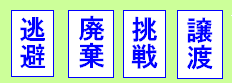

日々、想ふ
〜過去感じたことがつれづれと〜
（できるだけ最大化してお読みください）
日々、想ふ
笹井骨折。３/３１
高校の
物理教師の
教え方
タケユキです。
タイトルの笹井骨折は高校の時の物理の先生が音速、
秒速３３１．５ｍを覚える時の覚え方として
「笹井(３３１)さんが骨(５)折したと覚えてください」
と言っていたのを今日の日付３/３１を見て思い出したのです。
ええ、それ以外に特に意味はありません。
今日のピアス：そろそろ新しいがほしい。
いわゆるクラブというやつ。３/３０
友達の
ダンスを見るため
心斎橋へ
タケユキです。
今日は友達が心斎橋でダンスを踊るってので
塾に行った後の深夜１時、
友達を後ろに乗せて一路心斎橋へ。
こういうところに来るのは初めてだったんだけど、
なにこれめっちゃ楽しいじゃんけ。
友達のダンスはかっこよかったし
ライブしてるテンション高いしMCおもろいし、
なにより俺のタイプの女の子系(ややお姉系)ばっかり。
世の中にはこんな楽しいところがあったんですか。
春休みの中の楽しかった出来事トップ３に余裕でランクインするほど楽しかった。
空が少し明るくなった帰り道、雪が降ってきたけどなんのその。
でも体は冷えたのでお風呂に入って寝ようと思います。
今日の天気：大阪にも雪がまだ降る。
最後の肉の日→３/２９
今年度
最後の肉の日
鶏肉で
タケユキです。
今日は３月の２９日、通称「最後の肉の日」ということで
鶏肉を食してみました。
最近ちょくちょく散財衝動が強いので
来月からはちょっと引き締めていきたいと思います。
今日の天気：とりあえず夜に雨止んで。
久し振りに３/２５〜２７。３/２８
この三日
想い出読んだら
分かるかと
タケユキです。
というわけで
２００６三都物語〜京都・大阪・神戸〜をアップしました。
これであなたも関西マスター。嘘ですけど。
でもこれを読んで関西に遊びに来たいと思ってもらえれば。
今日の天気：雨なのかどうなのか。
そうだ京都に行こう。３/２５
というわけで
今日は京都へ
来ています
タケユキです。
森本のおっさんがさんまの家に来てるということで
バイト終わってからバイクで京都へ行きました。
最近ちょっとあったかいし、この日もまぁ寒いってわけじゃないからって
薄着でバイク乗ったのなめてた。ごめん天気。
めさ寒いやんけ。
明日は京都観光で寺巡りしてきます。
今日の晩ご飯：近々画像を載せます。
↑なんかあったらしい。
俺もうそんな年？３/２４
カードダス
いつの時代も
流行ってます
タケユキです。
今日はお昼に春期講習で中２の理科・国語を教えてたんだけど
休憩時間に生徒がなにかしら大量のカードを出してた。
頭の中で思いつくカードゲームをとりあえず言ってみた、
「お、それデュエルモンスターズ(遊戯王のやつ)？」
「え、先生それ古い」
え、マジで。
今日のカードダス：デュエルマスターズというやつでした。
リフレッシュ。３/２２・２３
今日からは
三日でバイトが
４つある
タケユキです。
急きょ帰省してストレス発散して帰ってきました。
帰省しても慰めてくれる、または励ましてくれる友達は
一人もいませんでしたが(基本的にけなす人のみ)
それでも元気出るのがすごい。
今日から三日間でバイトが４つ入ってますが
余裕で蹴散らしますよ？久々にそんな気分。
今月いっぱいはこのテンションでやってこう。
今日の気温：あったかい？寒い？
充電期間。３/２０・２１
今週は
まぁとりあえず
はっちゃける
タケユキです。
春休みとはいえちょっと疲れてますよ。
ちょっと休んでこう。
今日の気温：まだ寒い。
フラリ。３/１９
思考だけ
くるくる回る
得はなし
タケユキです。
なんていうか不完全燃焼？
ふっきれん自分がいてます、いろんな面で。
なんていうか高尚な志を持って生きてる・生きてきたわけではないので
たまにエラそうに物事を考えてる自分に嫌気って感じが。
お前はそんなにすごい人間かっちゅーねん。
もっとプーッとパーッとだべーっとしてたい。
飲もう。
今日の：・・。
時の卵。３/１８
賞味期限
甘く見ると
痛い目だ
タケユキです。
賞味期限は２，３日過ぎても食えるだろ的な家庭で育ったわけですが、
１つだけ気を抜くなと言われてきた物がある。
それはなぜか卵。
賞味期限という策を乗り越えた瞬間、彼らは人間に牙をむく。
なんで卵がそんな危険って親が思ってるのかはいまいち分からんのだけど
今目の前には賞味期限が２日過ぎた卵が、

さあ、どうする！？
今日の日記書きながら思った：あれ？卵だっけな？
ただいま！３/１７
オグが来て
ただただむさぼる
デコポンを
タケユキです。
今オグがうちでデコポン(みかんのデコがポンとなったやつ)を
食いまくってます。
あ、今日歯医者行ってきたら
待合室に「生協の白石さん」があった。
治療の途中で麻酔してもらって、効いてくるまでも読んでたら
「あ、それ僕(歯医者さん)がほしくて買ったんですよ〜」
「あ、そうなんですか〜」
「ユーモアたくさんでおもしろいですよね」
歯医者さんに行って初めて世間話をした。
前回通った歯医者さんは完治するまでに時間がかかって
途中で挫折したって話も伝えて、
「できるだけ少ない回数でまとめてやっちゃいますから」っていってもらえて、
でも治ってからもできるだけ定期健診とかに来たほうがいいよ、
早く見つけたら治りも早いし、痛くないし、お金かからないしね〜。
や、まったく。
うん、今回の歯医者は続けられそうかも。
別に受付のお姉さんがかわいかったからじゃないですよ。
しかし歯科助手のお姉さんはなんでこうもかわいい人が多いんですかね。
今日の日記：前後半で内容コロっと変わります。
雨とか関係ない。３/１６
口の奥
痛みが消えず
泣きそうです
タケユキです。
さて、虫歯が痛くなってきたみたいです。
左の奥です。ちなみに上の歯です。
そうやって冷静に書いてはいますがどうにもならないので
明日朝一で行ってこようと思います。
おやすみなさい。
今日の痛み：いや、なんかほんと痛いのよ。